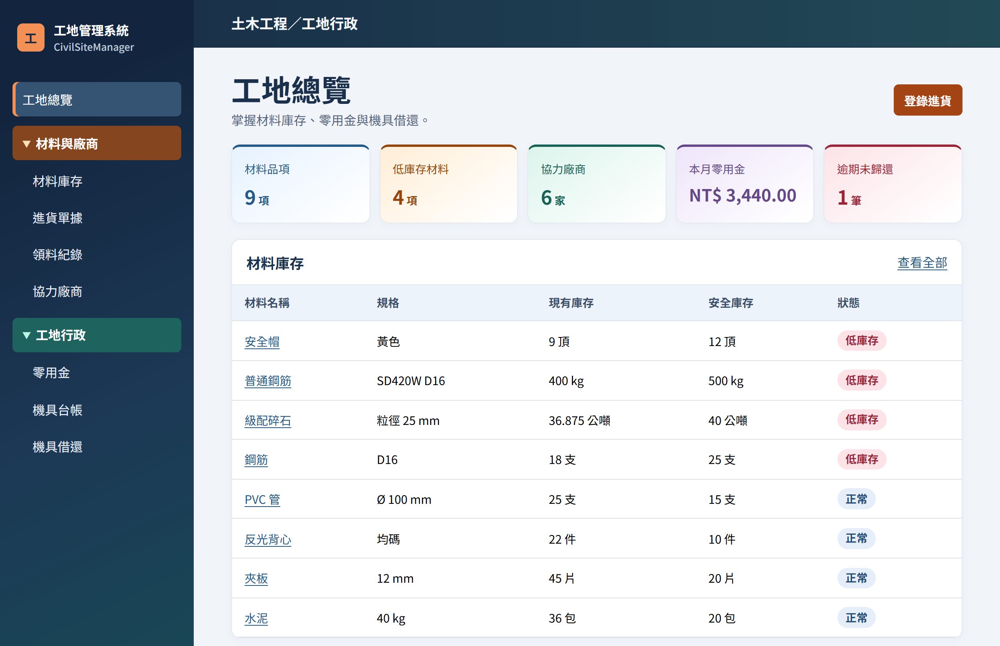

材料進出貨
登錄進貨與領料，即時計算庫存。低於安全庫存時顯示紅色警示。

登錄進貨與領料，即時計算庫存。低於安全庫存時顯示紅色警示。
新增、搜尋及修改廠商資料，查看關聯的進貨單據。
依材料、廠商或請款狀態篩選，查閱數量、單價與總金額。
查詢零用金支出及月統計，管理機具借出、歸還與逾期紀錄。
驗收使用獨立資料庫執行新增、查詢、修改及刪除。SQLite 完整性檢查回傳 ok，外鍵檢查為 0 筆違規。
本頁提供系統介紹與驗收摘要。可在免登入網站操作資料，該網站使用獨立的公開示範資料庫。